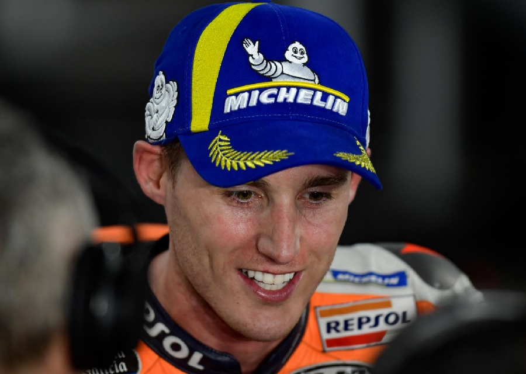

Pol Espargaro Acungi Jempol Sirkuit Mandalika Diperbaiki Dalam Waktu Singkat
PEMBALAP Repsol Honda, Pol Espargaro acungi jempol untuk tim yang bekerja demi berlangsungnya MotoGP Mandalika 2022. Ia takjub, Sirkuit Mandalika bisa diperbaiki dalam waktu singkat.
Sebagaimana diketahui, pembalap 30 tahun itu kembali melintas di Sirkuit Mandalika pada sesi Latihan Bebas 1 dan 2, Jumat 18 Maret 2022 kemarin. Sebelumnya, Pol Espargaro juga turut menjajal Sirkuit Mandalika saat tes uji coba pramusim pada 11-13 Februari 2022 silam.
Dari pengalamannya, ia melihat aspal Sirkuit Mandalika sudah lebih baik ketimbang tes uji coba pramusim. Namun, ia mengakui jika perbaikan dilakukan masih belum sempurna.
Sirkuit Mandalika sendiri mengalami perbaikan dalam waktu tiga pekan. Itu terhitung sejak berakhirnya tes uji coba pramusim MotoGP Mandalika 2022. Sebagian aspalnya dikelupas dan diganti dengan permukaan baru dan akhirnya selesai tepat waktu.
Sekarang, lintasannya sudah selesai diperbaiki, dan sudah lolos homologasi. Pol Espargaro mengaku takjub dengan perbaikan yang dilakukan, meski masih belum sesuai harapan.
“Aspal barunya sudah cukup bagus. Kami mengalami kesulitan, tetapi sudah jauh lebih baik ketimbang uji coba pramusim. Memang tidak sempurna, namun sesuatu yang diselesaikan dalam waktu kurang dari satu bulan saja sudah luar biasa,” kata Espargaro.
Pembalap asal Spanyol tersebut mengaku jika masih keluhan terhadap terhadap lintasannya. Namun, ia merasa ada beberapa kelebihan di aspal barunya.
“Aspalnya tidak terkelupas seperti ketika uji coba pramusim. Lintasannya juga terasa sangat lengket dengan motor. Tapi, aspalnya masih sedikit kotor, namun itu bukan masalah,” ujarnya.
Sebagai tambahan informasi, Pol Espargaro sendiri berhasil menjadi pemabalap tercepat di sesi Latihan Bebas pertama. Ia membukukan mencatatkan waktu 1 menit 33.499 detik.
Di hari kedua pada Sabtu (19/3/2022), Pol Espargaro kembali melintas di Sirkuit Mandalika. Ia akan mengikuti sesi Latihan Bebas 3 dan 4, serta dua sesi Kualifikasi untuk menentukan posisi awal balapan MotoGP Mandalika 2022.